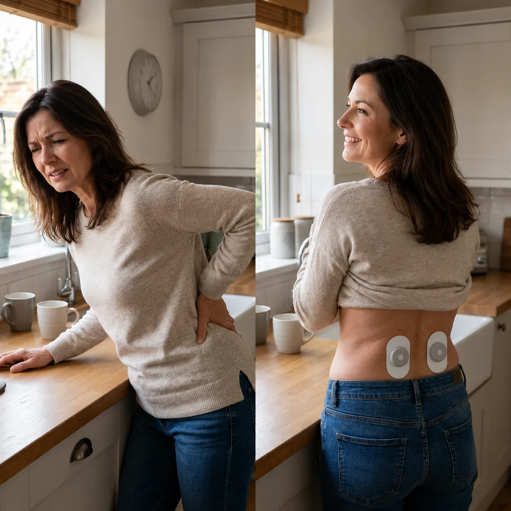
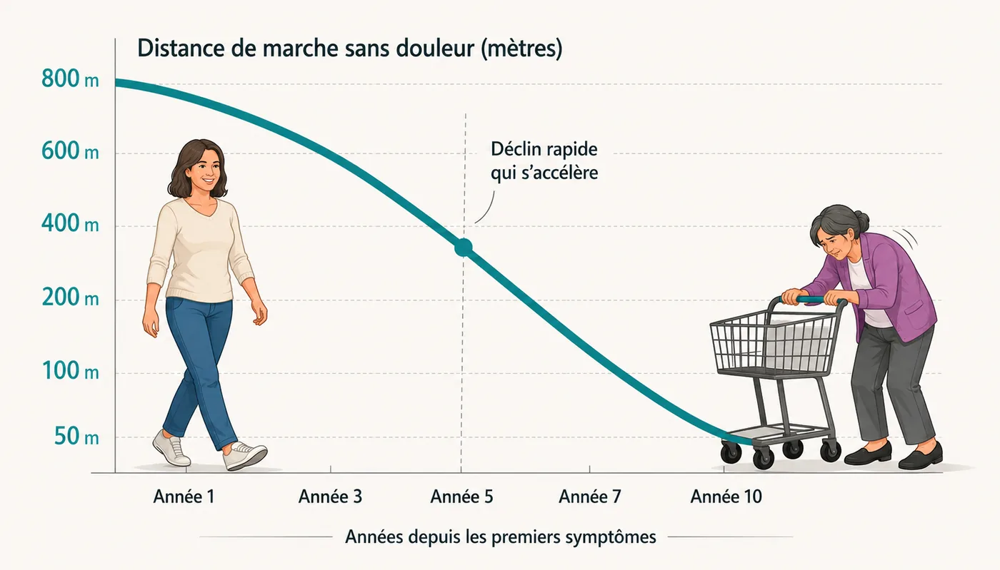
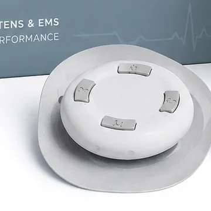
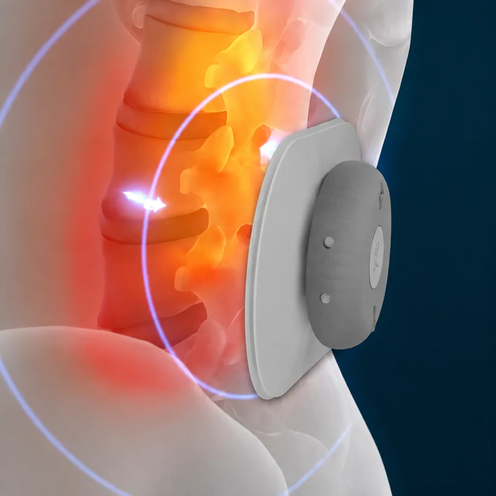
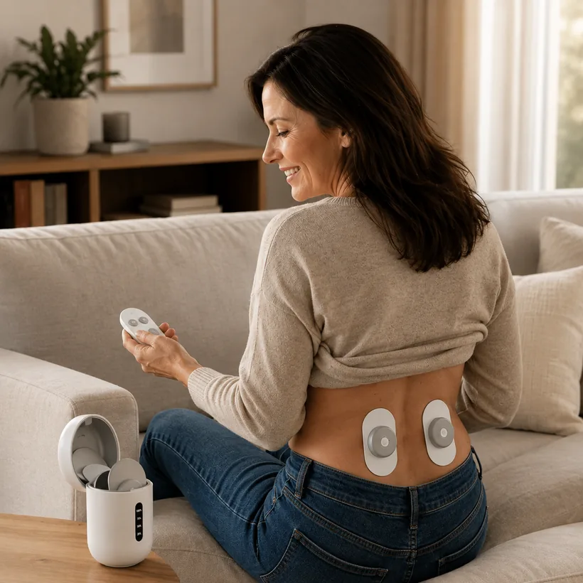
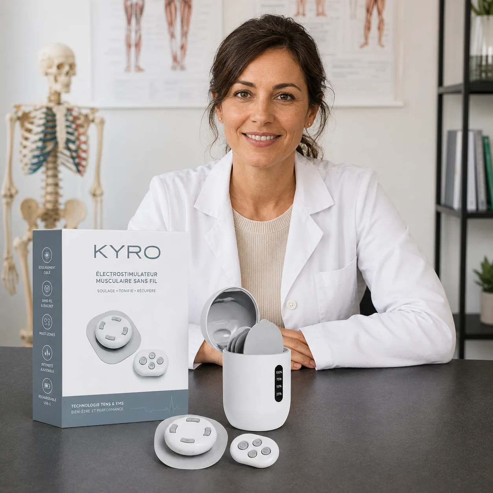
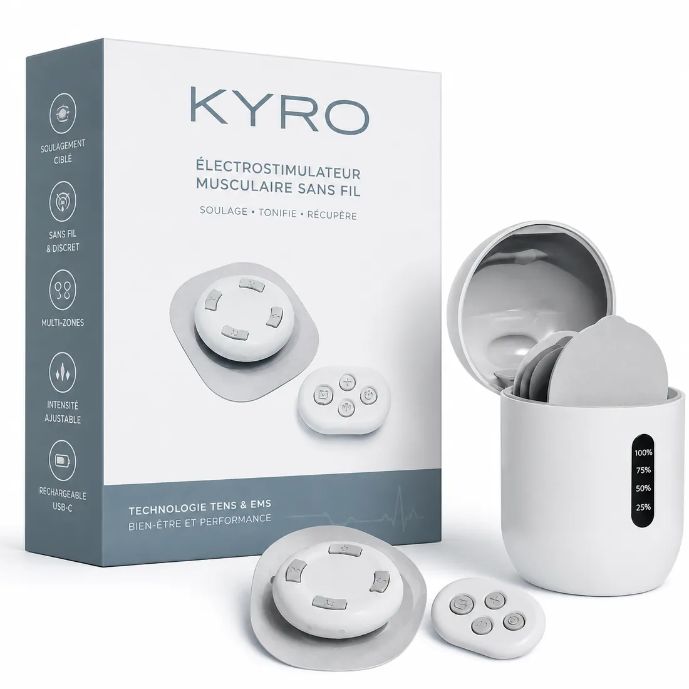
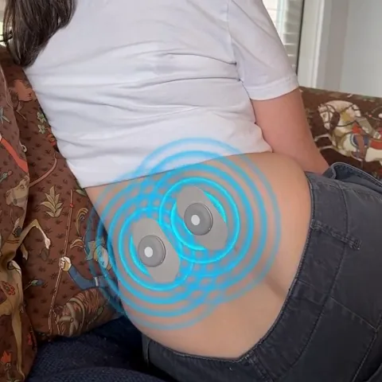

Si les séances de kiné, les infiltrations ou même la chirurgie n'ont pas empêché la douleur de revenir, c'est peut-être qu'un muscle précis n'a jamais été réactivé. KYRO est l'appareil à domicile conçu pour l'atteindre.

À noter : disponible uniquement ici, pas sur les marketplaces
Ils en parlent
La plupart des traitements soulagent la douleur en surface. Presque aucun ne s'occupe du muscle que votre dos utilise vraiment pour se stabiliser.
Sous chaque vertèbre lombaire se trouve un petit muscle profond, le multifide. À chaque pas, il se contracte et maintient votre colonne alignée : c'est votre gaine interne. Quand il fonctionne, il protège les nerfs et empêche les vertèbres de se tasser les unes sur les autres.
Le problème, c'est que la douleur, l'inflammation ou une opération déclenchent tous le même réflexe de protection : le système nerveux met ce muscle « en veille ». Il cesse de se contracter — et il ne se rallume pas tout seul.
C'est pour ça que la marche devient plus difficile d'année en année, quels que soient les traitements essayés. Les infiltrations calment le nerf, la kiné renforce la surface, mais aucune ne redonne l'ordre de contraction au muscle profond. Une fois la gaine interne désactivée, le terrain est prêt pour la douleur chronique, la sciatique et l'usure des étages voisins après une opération.

Des impulsions de type NMES calibrées pour atteindre 30 à 50 mm de profondeur peuvent forcer ce muscle à se contracter à nouveau, et l'aider à retrouver son rôle de stabilisateur.
KYRO combine 3 éléments étudiés en clinique, calibrés pour réactiver le multifide — le muscle stabilisateur profond au cœur du mal de dos chronique et des douleurs après opération.

La NMES est la technologie utilisée en rééducation pour relancer les muscles endormis. Contrairement au TENS, qui masque la douleur en surface, elle force le muscle profond à se contracter — même quand le système nerveux a cessé de le solliciter.

Votre multifide se situe à 30–50 mm sous la peau. Un TENS classique ne dépasse pas 5–8 mm. KYRO est calibré pour délivrer ses impulsions exactement à la profondeur où vit ce muscle.

Pas de câble, pas de cabinet, pas de rendez-vous. Patchs sans fil, télécommande sans fil, boîtier de charge sans fil. Vous vous asseyez, vous lancez : l'appareil s'arrête seul au bout de 15 minutes.
Le multifide se situe entre 30 et 50 mm sous la peau — hors de portée d'un TENS classique.
Essayer KYROGarantie 90 jours, satisfait ou remboursé

Après plus de 20 ans passés à accompagner des patients souffrant du dos, la Dre Scheiss a fait le même constat, encore et encore : des traitements qui soulagent quelques semaines, puis la douleur qui revient. La cause n'était pas seulement l'os ou le nerf — c'était le muscle profond resté « en veille ».
De ce constat est né le partenariat avec KYRO : concevoir un appareil qui s'attaque à ce que la chirurgie, les infiltrations et la kiné classique ne touchent pas.
Repère indicatif, d'après les retours utilisateurs et la littérature sur la NMES. Les résultats varient d'une personne à l'autre.
Ne plus organiser sa journée autour du prochain moment où il faudra s'asseoir.
Réduire les réveils nocturnes liés aux tensions du bas du dos.
Agir sur le muscle en veille plutôt que de seulement calmer le nerf, encore et encore.
La NMES vise précisément le muscle que la chirurgie ne pouvait pas réactiver.
Pas de câble, pas de cabinet. Vous vous asseyez, vous lancez, KYRO travaille pendant 15 minutes.
Les deux patchs sans fil de part et d'autre du bas de la colonne.
Réglez le niveau sur la télécommande et lancez la séance.
Détendez-vous : l'appareil s'arrête automatiquement à la fin.
« J'appréhendais un énième gadget. Au bout de quelques semaines, je tiens debout plus longtemps en cuisine sans devoir m'appuyer. »
« 15 minutes le soir devant la télé, c'est tout. Les tensions du bas du dos se sont apaisées progressivement. »
« Après mon opération, je cherchais autre chose que les médicaments. Là je sens enfin le muscle travailler. »
Témoignages fictifs à visée de démonstration. À remplacer par de vrais avis clients vérifiés avant toute mise en ligne.
Une routine quotidienne pas-à-pas pour installer l'habitude et réactiver le muscle, séance après séance.
Un boîtier premium qui garde vos patchs chargés, protégés et prêts à partir en déplacement.
Fréquence des séances, progression d'intensité et étirements complémentaires, semaine après semaine.
Fin de l'offre à minuit.


Vous économisez 89 €
Paiement sécurisé · chiffrement 256 bits · vos données sont protégées
À noter : disponible uniquement sur ce site.
Essayez KYRO chez vous pendant 90 jours. S'il ne vous aide pas, renvoyez-le pour un remboursement — c'est aussi simple que ça.
Non. Un TENS agit en surface (5–8 mm) pour masquer la douleur. KYRO utilise la NMES calibrée pour 30–50 mm, afin de faire travailler le muscle profond lui-même.
Beaucoup ressentent la contraction profonde dès la première séance. Pour le confort au quotidien, comptez plutôt plusieurs semaines de régularité. Les résultats varient.
15 minutes. L'appareil s'arrête automatiquement à la fin. Une séance par jour suffit pour commencer.
Oui, mais toujours avec l'accord de votre médecin. En cas d'antécédent chirurgical, demandez son avis avant d'utiliser l'appareil.
Il est déconseillé aux porteurs d'un pacemaker ou d'un défibrillateur, aux femmes enceintes, en cas d'épilepsie, ainsi que sur une plaie ou une zone irritée. En cas de doute, consultez votre médecin.
Vous êtes couvert par la garantie 90 jours : renvoyez l'appareil pour un remboursement.
Vous disposez de 90 jours. Renvoyez l'appareil et vous êtes remboursé à réception. Contactez notre service client pour lancer la procédure.